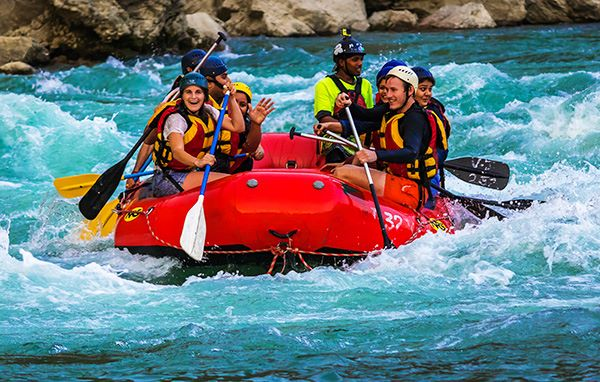
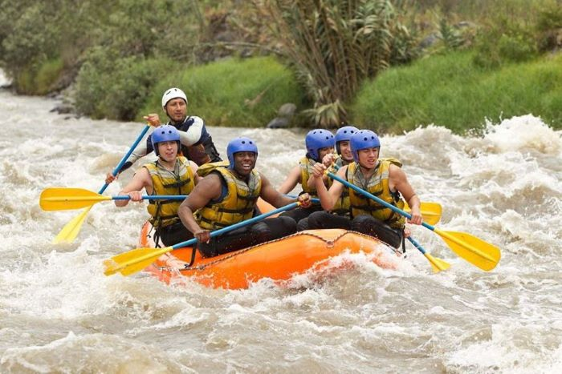
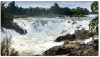

At Extreme Nile Rafting, we are passionate about providing thrilling and unforgettable rafting experiences. Our team of experienced guides is dedicated to ensuring your safety and enjoyment on the water.


Extreme Nile Rafting
Our History
Extreme Nile Rafting was founded many years ago and has grown to serve customers worldwide. It began with a small idea and has since expanded into an innovative leader in its field. Our story is built on passion, dedication, and love for the great outdoors.
From humble beginnings, we have grown to become one of the most recognized names in rafting. Thousands of adventurers from all around the world have joined us to explore rivers safely and experience the thrill of rafting with expert guides.